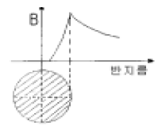
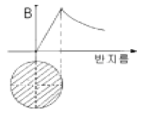
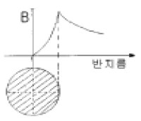
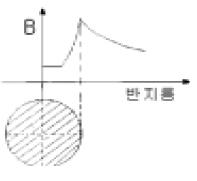
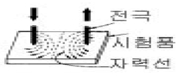
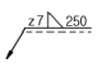

자기비파괴검사산업기사(구) (2005-03-06 기출문제)
1과목: 자기탐상시험원리
1. 자분탐상시험에서 자화방법을 선택할 때 특별히 고려해야할 사항이 아닌 것은?
- 자계의 방향
- 시험체의 형상
- 결함의 방향
- 시험체의 전기전도도
(정답률: 알수없음)

2. 보자성(Retentivity)에 대한 설명으로 맞는 것은?
- 자화가 될 수 있는 정도의 성질
- 강자성체가 자력을 보유하는 능력을 갖는 성질
- 자성체를 끌어당기는 힘을 갖고 있는 성질
- 자성체에 자화력이 제거된 후 자성체에 남아있는 자력의 양
(정답률: 알수없음)
3. 다공성 시험체(porous material)를 검사하는데 적합한 침투제는?
- 수세성 침투제
- 여과입자 침투제
- 후유화성 침투제
- 용제제거성 침투제
(정답률: 알수없음)
4. 다음 중 강자성체의 투자율에 영향을 미치는 요인이 아닌것은?
- 열처리 상태
- 표면 상태
- 가공상태
- 작용시킨 자계의 세기
(정답률: 알수없음)
5. 자분검사액 농도의 점검주기를 옳게 설명한 것은?
- 매일 점검한다.
- 시험 때마다 점검한다.
- 주 1회 점검한다.
- 월 1회 점검한다.
(정답률: 알수없음)
6. 다음 중 자분탐상시험시 원형자계를 유도하는 경우는?
- 코일 자켓속에 검사체를 넣는다.
- 요크형에 전류를 통한다.
- 프로드에 전류를 통한다.
- 코일로 감고 코일에 전류를 통한다.
(정답률: 알수없음)
7. 실린더 형태의 강재 시험체내에 구리로 된 전류관통봉을 집어 넣은 다음 구리관통봉에 전류를 통전시키면 실린더 시험체내에는 어떤 자화가 생성되겠는가?
- 전도체와 같은 강도와 모양의 자력선이 생긴다.
- 전도체에 형성된 자계보다 더 크다.
- 전도체에 형성된 자계보다 작다.
- 실린더의 외경에 관계없이 동일하다.
(정답률: 알수없음)
8. 자분탐상시험시 전류의 종류와 잔류자기에 대한 관계를 바르게 설명한 것은?
- 직류전류를 서서히 감소시키면 잔류자기가 소멸된다.
- 교류전류를 서서히 감소시키면 잔류자기가 소멸된다.
- 교류전류를 갑자기 감소시키면 잔류자기가 소멸된다.
- 직류전류를 갑자기 감소시키면 잔류자기가 소멸된다.
(정답률: 알수없음)
9. 어떤 전하(q)가 있을 때 이 전하로부터 거리(r)만큼 떨어진 곳에, 같은 크기의 전하에 작용하는 힘을 나타내는 관계식은? (단, 힘 F는 자계의 세기, k는 비례상수이다.)
- F = k(q/r)2
- F = (q/r)2
- F = k(r/q)2
- F = (r/q)2
(정답률: 알수없음)
10. 자분탐상검사의 전류에 대한 설명이 올바른 것은?
- 교류전류를 사용하는 경우는 원칙적으로 표면결함의 검출에 한한다.
- 직류전류를 사용하는 경우는 원칙적으로 표면결함의 검출에 한한다.
- 교류전류를 사용하는 경우는 원칙적으로 내부결함을 검출하기 위하여 사용한다.
- 교류전류를 사용하는 경우는 원칙적으로 외부, 내부결함을 모두 검출할 수 있다.
(정답률: 알수없음)
11. 직경 20mm인 환봉에 전류가 흐를 때, 이 전류(같은 전류)가 직경 40mm인 환봉에 흐르면 표면에서의 자계의 강도는 어떻게 되는가?
- 감소한다.
- 일정하다.
- 2배로 증가한다.
- 4배로 증가한다.
(정답률: 알수없음)
12. 다른 비파괴검사법과 비교해 볼 때 자분탐상검사는 다음 어떤 결함을 검출하는데 가장 적합한 검사법인가?
- 내부 깊숙히 있는 균열
- 미세한 표면균열(Surface crack)
- 표면 및 표면하 약 10cm까지의 결함
- 두꺼운 막(coating)이 되어있는 시험체의 내부결함
(정답률: 알수없음)
13. 다음 중 자분탐상검사의 검사결과에 대한 신뢰성을 높이기 위한 방법이 아닌 것은?
- 시험체에 존재하는 모든 균열을 검출할 수 있는 비파괴 검사법을 검토, 수행한다.
- 일정 자격을 갖춘 검사원이 검사를 수행한다.
- 간단한 검사장비 및 검사절차만으로 검사를 수행하도록 지시하여야 한다.
- 숙련된 검사원이 검사결과로부터의 지시모양을 판독한다.
(정답률: 알수없음)
14. 다음 중 전류관통법과 코일법의 공통점은?
- 자계의 방향
- 전극의 비접촉
- 스파크 발생
- 탈자의 형식
(정답률: 알수없음)
15. Hall 소자라 불리는 감자성 반도체로 만들어진 작고 얇은 평판모양의 자기검출기를 이용하여 국부적인 공간자계나 누설자속밀도를 측정하는 자기계측기는?
- 자속계
- 가우스메타
- 간이형 자기검출기
- 자기콤파스
(정답률: 알수없음)
16. 다음 비파괴검사 중 일반적으로 표면결함을 찾아내는 검사법으로 가장 적합한 것은?
- 초음파탐상검사
- 침투탐상검사
- 누설검사
- 방사선투과검사
(정답률: 알수없음)
17. 자화방법을 선택하는데 있어 고려해야 할 사항이 아닌 것은?
- 자계의 방향은 가능한한 시험면에 평행이 되게 한다.
- 반자계를 적게 한다.
- 자계의 방향과 예상되는 결함방향이 평행이 되게 한다.
- 시험면을 손상시키면 안되는 경우는 직접 통전하지 않는 방법을 선정한다.
(정답률: 알수없음)
18. 다음 자화방법에 대한 설명으로 옳은 것은?
- 축통전법의 경우 동일 길이의 시험체라면 몇 개를 병렬로 전극을 합쳐 자화시켜도 좋다.
- 직접통전법은 축방향 결함을 검출할 수 없다.
- 프로드법의 경우 프로드간격에 대응하는 전류치를 변화시킬 필요가 있다.
- 전류관통법으로는 관의 내면 탐상에 필요한 자계를 가하는 것이 곤란하다.
(정답률: 알수없음)
19. 자분탐상시험에서 원형자계를 이용할 경우 장점에 속하지 않는 것은?
- 극이 필요하지 않다.
- 강한 자계가 가능하다.
- 조작이 일반적으로 간단하다.
- 선형보다 우수한 결함 검출능력을 갖는다.
(정답률: 알수없음)
20. 직선의 도선에 전류를 흘렸을 때 그 주위에 생기는 자계의 모양을 설명한 법칙은?
- 솔레노이드의 법칙
- 앙페르의 오른손법칙
- 자력선속법칙
- 자기저항법칙
(정답률: 알수없음)
2과목: 자기탐상검사
21. 실린더 형의 강시험체내에 구리로 된 전도체을 집어 넣은 다음 구리전도체에 전류를 통전시키면 실린더형 시험체의 내.외부 표면에서는 어떤 형태의 자화가 생성되겠는가?
- 전도체와 같은 강도 및 모양의 자력선이 생긴다.
- 자계가 전도체보다 더 크다.
- 자계가 전도체보다 작다.
- 실린더의 외경, 길이에 관계없이 동일하다.
(정답률: 알수없음)
22. 자분탐상검사시 코일을 사용하여 선형자화할 때 길이 10 인치, 직경 2인치의 환봉에 적용되는 Ampere-Turn수는?
- 3500 A.T
- 5000 A.T
- 7000 A.T
- 9000 A.T
(정답률: 알수없음)
23. 다음 중 일반적인 전자석 요크장비의 구성품에 해당되지않는 것은?
- 전원스위치
- 교류/직류 선택 스위치
- 전류계
- 전원 케이블
(정답률: 알수없음)
24. 자분적용시 자화시기에 따른 자분탐상검사법의 분류는?
- 직류법, 맥류법
- 건식법, 습식법
- 관통법, 극간법
- 연속법, 잔류법
(정답률: 알수없음)
25. 직경이 1/2인치인 볼트를 축통전법으로 원형자화할 때 필요한 전류는 약 몇 암페아인가?
- 400A
- 800A
- 1000A
- 1500A
(정답률: 알수없음)
26. 발주자가 자분탐상검사를 요구하였을 때, 기본적으로 실시해야 하는 검사 시기는?
- 기계가공을 하기 전에
- 기계가공 중간에
- 금속의 최종 열처리를 한 후에
- 금속의 최종 열처리 직전에
(정답률: 알수없음)
27. 습식자분의 분산재로 물을 사용하는 경우, 저온에서 사용하기 위해 첨가하는 것으로 적당한 것은?
- 수적방지제
- 거품방지제
- 에틸렌글리콜
- 페놀에폭시
(정답률: 알수없음)
28. 미세한 표면균열 검출에 가장 적당한 자화전류는?
- 직류
- 교류
- 반파직류
- 반파정류교류
(정답률: 알수없음)
29. 자분이 갖추어야 할 특성이 아닌 것은?
- 높은 투자성을 가질 것
- 낮은 보자성을 가질 것
- 유동성과 분산성이 높을 것
- 교류전류에서 표피효과가 클 것
(정답률: 알수없음)
30. 다음 중 단조과정에서 생긴 결함은?
- 백점(Flake)
- 기공(Porosity)
- 모래게재물(Sand inclusion)
- 라미네이션(Lamination)
(정답률: 알수없음)
31. 프로드법으로 자분탐상검사를 시행 후 보고서에 반드시 기록할 내용이 아닌 것은?
- 프로드 전극간격
- 코일의 감은 수
- 자화전류의 종류
- 통전시간
(정답률: 알수없음)
32. 사용중인 부품을 자분탐상검사하여 보수검사시 예상되는 결함의 종류는?
- 기공
- 수축공
- 피로균열
- 슬래그혼입
(정답률: 알수없음)
33. 자분의 형성에 영향을 주는 요인이 아닌 것은?
- 자화방법
- 자계의 세기와 방향
- 불연속의 형상
- 시험체의 표면 온도
(정답률: 알수없음)
34. 그림 중에서 봉강에 교류를 사용한 축통전법을 나타낸 것은 ? (단, X축은 반지름의 크기, Y축은 자장의 세기임)




(정답률: 알수없음)
35. 다음 중 극이나 전류방향이 주기적으로 바뀌는 전류는?
- 직류
- 반파전류
- 교류
- 전파정류
(정답률: 알수없음)
36. 시험체에 전극을 접촉시켜 자장을 부여하는 자분탐상기의 자화장치가 아닌 것은?
- 축통전식 자화장치
- 직각통전식 자화장치
- 전류관통식 자화장치
- 프로드식 자화장치
(정답률: 알수없음)
37. 염색자분탐상으로 지시를 관찰할 때, 결함주위의 배경 및 결함자체에서도 빛의 반사가 되는데 반사비율의 차이가 크면 명암도가 커지므로 결함을 보다 쉽게 검출할 수 있다. 정상적인 지시의 검출이 가능하기 위한 명암도의 비는 얼마 이상이 되어야 하는가?
- 2 : 1
- 3 : 1
- 4 : 1
- 5 : 1
(정답률: 알수없음)
38. 자분탐상시험에서 의사지시 모양을 확인하는 방법으로 틀린 내용은?
- 자기펜자국을 탈자후 재시험하면 자분모양이 없어진다.
- 강전류에 의해 자분이 응집될 수 있는 모양은 전류를 작게하여 재시험하면 자분모양은 없어진다.
- 시험면이 거칠어서 생긴 자분모양은 면을 매끄럽게 하여 재시험하면 없어진다.
- 자분모양이 결함으로 판정하기 곤란할 경우 탈자를 하지 말고 재시험을 수행한다.
(정답률: 알수없음)
39. 잔류법을 사용하는 경우 자화조작후 자분 관찰을 마칠 때까지 주의해야 할 점을 바르게 서술한 것은?
- 계속 바람을 불어 준다.
- 다른 시험품들과 같이 쌓아 놓는다.
- 강자성체를 접촉시켜 놓는다.
- 합판위에 띄어 놓는다.
(정답률: 알수없음)
40. 두께가 50mm이고 재질이 0.04%C인 기계강판을 건식자분을 사용하여 자분탐상검사를 수행할 때 검출되는 불연속의 종류, 형태, 크기 등이 동일하다면 다음 중 표면으로부터 가장 깊게 존재하는 불연속을 검출할 수 있는 경우는?
- 200A 반파직류를 사용한 경우
- 400A 반파직류를 사용한 경우
- 300A 직류를 사용한 경우
- 600A 교류를 사용한 경우
(정답률: 알수없음)
3과목: 자기탐상관련규격및컴퓨터활용
41. ASME Sec.V에서 Art.7과 Art.25의 SE-709 규정이 서로 다른 경우가 있다. 다음 설명 중 올바른 것은?
- 형광자분 사용시 암실 적응 최소 시간을 Art.7에서는 5분, SE-709에서는 3분으로 규정하고 있다.
- 형광자분 사용시 암실 적응 최소 시간을 Art.7에서는 3분, SE-709에서는 5분으로 규정하고 있다.
- 암메타 교정주기를 Art.7에서는 1년, SE-709에서는 3개월로 규정하고 있다.
- 암메타 교정주기를 Art.7에서는 3개월, SE-709에서는 1년으로 규정하고 있다.
(정답률: 알수없음)
42. ASME Sec.V, Art.7에서 허용하는 자화전류 범위가 다음중 가장 큰 것은?
- 두께가 10mm인 시험체에서 프로드 간격 1인치당 허용되는 자화전류 범위
- 두께가 20mm인 시험체에서 프로드 간격 1인치당 허용되는 자화전류 범위
- 코일법에서 L/D 값이 3이고, 코일은 10번 감은 경우 허용되는 자화전류 범위
- 직접자화법에서 시험체두께 1인치당 허용되는 자화전류 범위
(정답률: 알수없음)
43. KS D 0213에서 자분모양을 기록하는 방법중 스케치의 경우 기록내용이 아닌 것은?
- 위치
- 모양
- 치수
- 깊이
(정답률: 알수없음)
44. KS D 0213에 의해 연속법으로 주강품을 검사하려고 한다. 이 때 자분을 적용하는 방법으로 알맞는 것은?
- 자화전에 자분의 적용을 완료한다.
- 자화조작중에 자분의 적용을 완료한다.
- 자화종료후에 자분의 적용을 완료한다.
- 자화종료전.후에 관계없이 자분을 적용한다.
(정답률: 알수없음)
45. KS 규격에 따라 A형 표준시험편을 사용하는 목적으로 알맞은 것은?
- 자분의 크기를 결정하기 위하여
- 자분 검사액의 농도 및 결함깊이를 검출할 목적으로
- 결함크기를 비교하기 위하여
- 시험장치,자분, 검사액의 성능 및 시험조작의 적합여부 조사를 위하여
(정답률: 알수없음)
46. KS 규격에서 그림과 같은 자화법을 무슨 자화법이라고 하는가?

- 프로드법
- 극간법
- 축통전법
- 코일법
(정답률: 알수없음)
47. ASME Sec.V Art.7에서 직접 접촉에 의한 직류통전법 이용시 전류값은 시험품 외경에 대해 인치당 몇 [암페아]로 규정하는가?
- 90 ∼ 110
- 100 ∼ 125
- 300 ∼ 800
- 3500 ∼ 4500
(정답률: 알수없음)
48. ASME SE-709에서 건식법에 의한 자분탐상 시험결과, 표면 직하 불연속의 원인으로 형성된 자분모양은 표면불연속의 자분모양에 비교하여 다음 중 어떤 형태를 나타내는가?
- 선명한 자분모양으로 나타난다.
- 약한 자분모양으로 나타난다.
- 의사모양으로 나타난다.
- 자분모양의 차이가 없다,
(정답률: 알수없음)
49. KS D 0213에 의한 가느다란 요철부에 생기는 누설자속에 따라 형성되는 자분 모양과 자분이 오목부에 고여 생기는 자분 모양은?
- 재질경계지시
- 표면거칠기지시
- 자극지시
- 단면급변지시
(정답률: 알수없음)
50. KS D 0213의 자분탐상시험시 통전 시간에 관한 내용으로 틀린 것은?
- 잔류법은 원칙적으로 (1/4) - 1초로 한다.
- 충격 전류의 경우에는 1/120 초 이상으로 한다.
- 충격 전류의 경우 3회 이상 통전을 되풀이하는 것으로 한다.
- 연속법은 원칙적으로 (1/2) - 1초로 한다.
(정답률: 알수없음)
51. KS 규격에 따라 자화전류로 직류를 사용했을 때 시험결과 자분모양이 나타났다. 이 자분모양이 표면의 흠 또는 표면 근처 내부 흠에 의한 것인지를 구별하기 위한 조치로 올바른 것은?
- 적용한 전류치보다 더 높은 직류전류로 재시험한다.
- 충격전류를 사용하여 연속법으로 재시험한다.
- 교류로 재시험한다.
- 탈자한 후 자분분산매를 적용한다.
(정답률: 알수없음)
52. ASME Sec.Ⅷ, Div.1 App.6에 따른 지시의 평가 및 분류에 관한 설명 중 옳지 않은 것은?
- 지시의 길이가 폭의 3배를 초과한 지시는 선형지시로 분류하여 평가한다.
- 지시의 길이가 폭의 3배 이하인 지시는 원형지시로 분류하여 평가한다.
- 균열로 식별된 자분지시는 별도로 분류하여 평가한다.
- 평가대상(관련지시)인 선형지시는 무조건 불합격으로 평가한다.
(정답률: 알수없음)
53. ASME Sec.Ⅴ Art.7에 따라 자분탐상시험시 프로드법에서 검사체 두께가 3/4 인치이상일 때 프로드간격에 대한 자화 전류는 프로드 간격 1인치당 암페아의 수는 얼마로 규정하고 있는가?
- 100∼125[Amp]
- 70∼110[Amp]
- 110∼150[Amp]
- 100∼145[Amp]
(정답률: 알수없음)
54. KS D 0213의 자분탐상검사에서 흠이외의 원인으로 생기는 자분모양을 무엇이라 하는가?
- 결함지시
- 자분필적
- 의사지시
- 불연속지시
(정답률: 알수없음)
55. ASME. Sec.V, Art.7에 따라 형광자분탐상검사시 자외선등을 점화시켜 전기능을 발휘할 때까지 최소한 얼마동안 예열하도록 규정하는가?
- 2분
- 3분
- 4분
- 5분
(정답률: 알수없음)
56. 컴퓨터 소프트웨어는 크게 응용 프로그램 패키지와 시스템 프로그램으로 나눌 수 있다. 다음 중 시스템 프로그램에 해당하지 않는 것은?
- 시스템 개발 프로그램(System Development Programs)
- 언어 번역기(Language Translators)
- 워드 프로세서(Word Processer)
- 운영체제(Operating System)
(정답률: 알수없음)
57. 데이터통신 시스템 중 데이터 터미널 장치(DTE)의 기능으로 볼 수 없는 것은?
- 입출력 기능
- 신호 변환기 기능
- 전송 제어 기능
- 기억 기능
(정답률: 알수없음)
58. 월드와이드웹의 서버와 클라이언트가 하이퍼 텍스트 문서를 송수신하기 위하여 사용하는 프로토콜은?
- PPP
- FTP
- HTTP
- SMTP
(정답률: 알수없음)
59. 중앙처리장치와 주 기억장치와의 처리 속도 차이를 줄이기 위해 사용되는 고속 메모리는?
- Cache memory
- Virtual memory
- Dynamic memory
- Auxiliary memory
(정답률: 알수없음)
60. 인터넷 상에서 사용자가 원하는 키워드를 입력하여 사이트를 찾고자 할 때 사용할 프로그램은?
- 즐겨찾기
- 검색엔진
- 목록보기
- 인터넷옵션
(정답률: 알수없음)
4과목: 금속재료 및 용접일반
61. 피복제에 습기가 있는 상태로 용접했을 경우 많이 일어날 수 있는 현상으로 다음 중 가장 중요한 것은?
- 오버랩 현상이 일어난다.
- 크레이터가 생긴다.
- 언더컷이 생긴다.
- 기공이 생긴다.
(정답률: 알수없음)
62. 용접을 할 때 전원을 사용하지 않고 화학반응의 발열 작용에서 생기는 열로 용접하는 방법은?
- 스터드 용접
- 일렉트로 슬랙 용접
- 테르밋 용접
- 불활성 가스 용접
(정답률: 알수없음)
63. 아세틸렌 가스가 충전된 용기의 무게가 62.5kgf인 용해 아세틸렌 용기를 가변압식 저압토치의 225번 팁(tip)을 사용하여 용접한 후, 아세틸렌가스 빈용기의 무게를 달았더니 58.5kgf이었다. 이 때 소모된 아세틸렌가스 부피는 몇 ℓ인가?
- 2250ℓ
- 2620ℓ
- 3250ℓ
- 3620ℓ
(정답률: 알수없음)
64. 아크용접에서 아크가 용접의 단위길이 1cm당 발생하는 전기적 에너지가 54000 J/cm인 경우 아크 전압 E가 30V이고 아크전류 I가 300A라고 하면 용접속도는 몇 cm/min 인가?
- 10
- 8
- 6
- 5
(정답률: 알수없음)
65. 일반적인 용접부의 용접변형 방지방법이 아닌 것은?
- 억제법
- 역변형법
- 냉각법
- 초음파법
(정답률: 알수없음)
66. 용접하려고 하는 금속판의 한쪽 또는 양쪽에 돌기 부분을 만들어 놓고 압력을 가하면서 전류를 통하면 집중열이 발생되면서 용접 되는 것은?
- 프로젝션(projection)용접
- 퍼커션(percussion)용접
- 스포트(spot)용접
- 시임(seam)용접
(정답률: 알수없음)
67. 용착된 금속의 급랭을 방지하는 목적이 아닌 것은?
- 용착금속 중에 가스나 슬래그가 떠오를 수 있는 시간을 주기 위함
- 모재와 용착금속이 자유로이 팽창, 수축하도록 하기 위함
- 담금질 경화를 방지하기 위함
- 슬래그 제거를 쉽게 하기 위함
(정답률: 알수없음)
68. 보기와 같은 용접기호에서 z7 이 의미하는 것은?

- 용접단면 치수
- 용접 목 두께
- 용접 목 길이
- 루트 간격
(정답률: 알수없음)
69. 용접전류가 높아졌을 때 일어나는 현상이 아닌, 전압이 높아 졌을 때 발생하는 현상인 것은?
- 용입이 깊어진다
- 언더컷이 생기기 쉽다
- 스패터가 많이 생긴다
- 용접 비이드가 넓어진다
(정답률: 알수없음)
70. 다음 중 점용접의 3대 요소가 아닌 것은?
- 도전율
- 용접 전류
- 가압력
- 통전 시간
(정답률: 알수없음)
71. 다음 중 물리적 성질이 아닌 것은?
- 비중
- 융점
- 전도도
- 연신율
(정답률: 알수없음)
72. 비정질합금의 제조법이 아닌 것은?
- 화학도금
- 금속가스의 증착
- 냉간가공법
- 액체급냉법
(정답률: 알수없음)
73. 구리의 일반적인 성질 중 옳지 못한 것은?
- 가공이 용이하다.
- 전기 및 열의 전도성이 우수하다.
- 전연성이 좋다.
- 건조한 공기 중에서 산화가 잘 된다.
(정답률: 알수없음)
74. 용융점이 가장 높은 원소는?
- Fe
- Cu
- W
- Ni
(정답률: 알수없음)
75. 재결정된 금속의 입자 크기를 옳게 설명한 것은?
- 가공도가 작을수록 크다.
- 가열시간이 길수록 작다.
- 가열온도가 높을수록 작다.
- 가공 전, 결정입자가 크면 재결정 후, 결정입도가 작다.
(정답률: 알수없음)
76. 오스테나이트 구조를 한 γ-Fe의 격자구조는?
- CPH
- FCC
- BCC
- BCT
(정답률: 알수없음)
77. 강철을 오스테나이트(Austenite)조직으로 가열하였다가 냉각속도를 빠르게 함에 따라 조직이 변하는 순서대로 되어 있는 것은?
- 펄라이트→소르바이트→투르스타이트→마텐자이트
- 펄라이트→투르스타이트→마텐자이트→소르바이트
- 마텐자이트→소르바이트→펄라이트→투르스타이트
- 펄라이트→마텐자이트→소르바이트→투르스타이트
(정답률: 알수없음)
78. 구상흑연 주철의 기지조직에 속하지 않는 형은?
- 페라이트형
- 펄라이트형
- 시멘타이트형
- 소르바이트형
(정답률: 알수없음)
79. 상온에서 열팽창계수가 매우 작아 표준자,샤도우 마스크, IC 기판 등에 사용되는 36% Ni-Fe 합금은?
- 인바(Invar)
- 퍼멀로이(Permalloy)
- 니칼로이(Nicalloy)
- 하스텔로이(Hastelloy)
(정답률: 알수없음)
80. 변태점 측정방법이 아닌 것은?
- 열 분석법
- 전기 저항법
- X-선 분석법
- 확산법
(정답률: 알수없음)